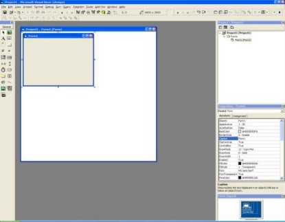
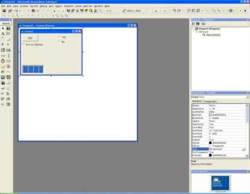
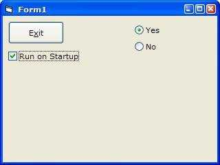

|
How to Add Windows XP Theme to an Application Microsoft Windows XP is the latest version of Windows. It includes many new features and updates to the Common Controls Library. One of the main features is the Windows XP Themes. This allows you to select a theme, and the entire look and feel of Windows, as you know it will change. However, if you were to write a program in VB, the buttons, textboxes you were to use, would not change. You need to tell Windows XP that you are going to use the new version of the Common Controls Library, and to do this you must include an application manifest. A manifest is an XML document that Windows XP searches for in the application’s directory when you open an application. This manifest tells Windows XP to use the new version of COMCTL32.DLL (Version 6). Here is a brief tutorial on creating an application manifest, for Visual Basic: Load Microsoft Visual Basic and start a new project  Now add a few standard controls, a button, a checkbox, two option buttons and a text box  Give them captions, and program the button to Exit when clicked.
Private
Sub
Command1_Click() COMCTL32.DLL exports a function called InitCommonControls. This is exported in COMCTL32.DLL versions from Windows 95. This needs to be called when the application is started, to ensure that the common controls library is opened. The declaration is not available in the API viewer. Make sure that you use Form_Initialize and not Form_Load, to enter the code. So the code in the form should now read:
Option
Explicit
Private
Sub
Command1_Click()
Private
Sub
Form_Initialize() Now we need to compile this into an executable file (the manifest will only work when run as an EXE) and actually create the manifest. I have called my application COMCTLTest.EXE. You can call your executable anything, but that name needs to correspond with the name on the manifest. Go to the folder, at which you have compiled the application into, load notepad and enter the following: <?xml
version="1.0" encoding="UTF-8" standalone="yes"?> Save this as: <YOUR EXE NAME>.EXE.MANIFEST So because I compiled my application as COMCTLTest.exe I would save my manifest as: COMCTLTest.EXE.MANIFEST Now, you are ready to run your application. Double click on the executable, and there you are!!  |
|
|